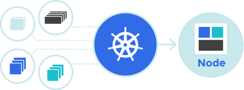
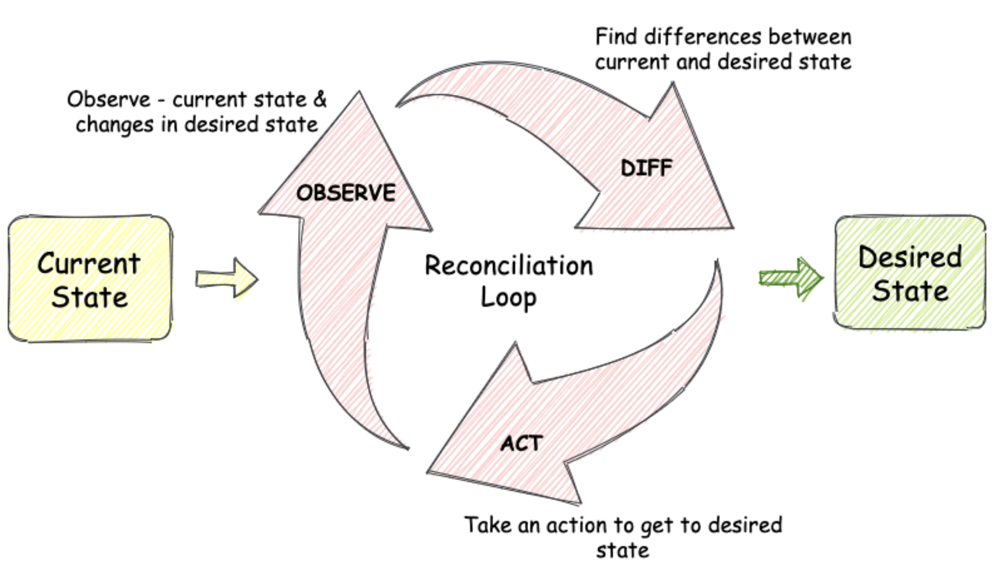

Containers
- Linux Containers
- Process isolation using Linux namespaces and union file system (OverlayFS)
- Builds on Linux namespaces and union file system (OverlayFS)
- Container engine (containerd) – accepts user inputs, pulls images from registry
- Container runtime (runc) – communicates with kernel to start cont. processes
- Linux Namespaces – 7 types providing process isolation
mnt– isolates filesystem mount pointsuts– isolates hostname;ipc– isolates message queues, semaphores, shared memorypid– isolates PID number space; containers have their own init process with PID 1net– private network stack (interfaces, routing tables, sockets)user– isolates UID/GID number spaces;cgroup– isolates cgroup root directory- Container Images
- Union of read-only layers via OverlayFS storage driver; immutable, never change
- Containers are ephemeral; persistent data stored in bind mounts
- Dockerfile – a script to build images; each instruction creates a new layer
- Images stored in a registry (e.g. Docker Hub); pulled and pushed via registry API
Overview
- In your architecture...
- Containers are atomic pieces of application architecture
- Containers can be linked (e.g. web server, DB)
- Containers access shared resources (e.g. disk volumes)
- Kubernetes
- Automation of deployments, scaling, management of containerized applications across number of nodes
- Based on Borg, a parent project from Goolge

Key Design Principles
- Kubernetes provides abstractions that separate application deployment from the underlying infrastructure details
- Application workloads and infrastructure decoupling
- Compute: Define what to run without specifying where it runs
- Storage: Applications request storage independent of storage backend
- Networking: Stable access to applications regardless of IPs or location
- Benefits
- Portability across on-prem and cloud environments
- Scalability and resilience through dynamic scheduling
- Consistency and standardization of deployment model
- Reduced vendor lock-in thanks to open standards
Desired State and Reconciliation
- Kubernetes operates on a desired state model
- Users define the state they want through object specifications (YAML)
- Example: “there should be 3 replicas of this application”
- Actual State vs. Desired State
- Kubernetes constantly monitors the cluster
- If the actual state drifts from the desired state, it takes action to fix it
- Reconciliation Loop
- Controllers continuously compare desired vs. actual state
- Automatically performs actions such as restarting, rescheduling, or scaling Pods

Features
- Automatic binpacking
- Automatically places containers onto nodes based on their resource requirements and other constraints.
- Horizontal scaling
- Scales your application up and down with a simple command, with a UI, or automatically based on CPU usage.
- Automated rollouts and rollbacks
- Progressive rollout out of changes to application/configuration, monitoring application health and rollback when something goes wrong.
- Storage orchestration
- Automatically mounts the storage system (local or in the cloud)
- Self-healing
- Restarts containers that fail, replaces and reschedules containers when nodes die, kills containers that don't respond to user-defined health checks.
- Service discovery and load balancing
- Gives containers their own IP addresses and a single DNS name for a set of containers, and can load-balance across them.
Core Building Blocks
- Cluster
- A set of worker nodes and a control plane
- Runs and manages containerized applications
- Node
- A worker machine in Kubernetes (VM or physical)
- Runs Pods scheduled by the control plane
- Control Plane
- Manages the overall state of the cluster
- Schedules workloads and responds to cluster events
- Pod
- The smallest deployable unit in Kubernetes
- One or more tightly-coupled containers
- Containers share networking and storage within a Pod
Architecture

Control Plane Components (Part 1)
- Global decisions about the cluster
- Schedulling
- Detecting and responding to cluster events, starting up new pods
- kube-apiserver
- exposes the Kubernetes API
- The API server is the front end for the Kubernetes control plane.
- etcd
- highly-available key value store used to store all cluster data
- kube-scheduler
- watches for newly created Pods with no assigned node
- selects a node for Pods to run on.
- Decision factors: resource requirements, hardware/software/policy constraints, affinity and anti-affinity specifications
Control Plane Components (Part 2)
- kube-controller-manager
- runs controller to ensure the desired state of cluster objects
- Node controller
- noticing and responding when nodes go down
- Job controller
- creates Pods to run one-off tasks to completion.
- Endpoints controller
- Populates the Endpoints object (that is, joins Services, Pods).
- cloud-controller-manager
- Integration with cloud services (when the cluster is running in a cloud)
- Node controller
- checks if a node has been deleted in the cloud after it stops responding
- Route controller
- For setting up routes in the underlying cloud infrastructure
- Service controller
- For creating, updating and deleting cloud provider load balancers
Node
- Kubernetes runtime environment
- Run on every node
- Maintaining running pods
- kubelet
- An agent that runs on each node in the cluster
- It makes sure that containers are running in a Pod.
- kube-proxy
- maintains network rules on nodes
- network rules allow network communication to Pods from inside or outside of the cluster
- uses the operating system packet filtering layer or forwards the traffic itself.
- Container runtime
- Responsible for running containers
- Kubernetes supports several container runtimes (containerd, CRI-O)
- Any implementation of the Kubernetes CRI (Container Runtime Interface)
Container Stack
Namespaces
- Logical grouping of cluster resources
- Allow you to organize and separate objects within a Kubernetes cluster
- Useful when multiple teams, environments, or projects share the same cluster
- Rationale
- Provide isolation and boundaries between workloads
- Prevent name collisions
- Objects can have the same name if in different namespaces
- Enable resource limits and access control per namespace
- Usage
- Common namespaces:
default,kube-system,kube-public,kube-node-lease - Create separate namespaces for e.g. dev, test, prod
- Commands run in a namespace unless another is specified
Pod
- Pod
- A group of one or more tightly-coupled containers.
- Containers share storage and network resources.
- A Pod runs a single instance of a given application
- Pod's containers are always co-located and co-scheduled
- Pod's containers run in a shared context, i.e. in a set of Linux namespaces
- Pods are created using workload resources
- You do not create them directly
- Pods in a Kubernetes cluster are used in two main ways
- Run a single container, the most common Kubernetes use case
- Run multiple containers that need to work together
Workloads
- An application running on Kubernetes
- Workloads run in a set of Pods
- Pre-defined workload resources to manage lifecylce of Pods
- Deployment and ReplicaSet
- managing a stateless application workload
- any Pod in the Deployment is interchangeable and can be replaced if needed
- StatefulSet
- one or more related Pods that track state
- For example, if a workload records data persistently, run a StatefulSet that matches each Pod with a persistent volume.
- DaemonSet
- Ensures that all (or some) Nodes run a copy of a Pod
- Such as a cluster storage daemon, logs collection, node monitoring running on every node
- Job and CronJob
- Define tasks that run to completion and then stop.
- Jobs represent one-off tasks, whereas CronJobs recur according to a schedule.
Deployment Spec Example
- Deployment spec
apiVersion: apps/v1
kind: Deployment
metadata:
name: nginx-deployment
spec:
selector:
matchLabels:
app: nginx
replicas: 3 # tells deployment to run 3 pods matching the template
template:
metadata:
labels:
app: nginx
spec:
containers:
- name: nginx
image: nginx:1.14.2
ports:
- containerPort: 80
- A desired state of an application running in the cluster
- Kubernetes reads the Deployment spec and starts three app instances
- If an instance fails, Kubernetes starts a replacement app instance
What is a Service?
- A Kubernetes Service is an abstraction that defines
- A logical set of Pods
- A policy to access them.
- Pods are ephemeral – their IPs change when recreated
- A Service provides a stable virtual endpoint for a set of Pods
- Services enable reliable communication between components:
- Internal pods communication
- External access to cluster workloads
- Each Service gets
- A DNS name and
- virtual IP (ClusterIP) inside the cluster.
- Kubernetes component
kube-proxymanage routing to backend Pods.
Service Types
- ClusterIP
- Exposes the Service on an internal IP in the cluster only.
- Used for internal communication between Pods.
- NodePort
- Exposes the Service on each Node’s IP at a static port (e.g. 30080).
- Accessible externally via
NodeIP:NodePort. - LoadBalancer
- Provisions an external load balancer (e.g. in cloud environments).
- Routes external traffic to the Service.
- ExternalName
- Maps the Service to an external DNS name.
- No proxying — pure DNS CNAME redirection.
ClusterIP Service Example
- Example configuration exposing an NGINX Deployment internally:
apiVersion: v1
kind: Service
metadata:
name: nginx-svc
spec:
selector:
app: nginx
ports:
- protocol: TCP
port: 80
targetPort: 8080
type: ClusterIP
app=nginx receive traffic through ClusterIP.nginx-svc.default.svc.cluster.localhttp://nginx-svc:80.